A saucer borrows an entry attitude.
ASSEMBLED REVIEW COPY
Eight moments, fully assembled.
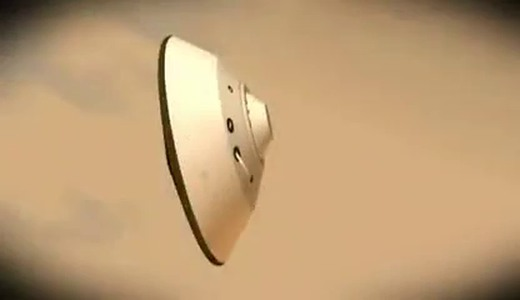
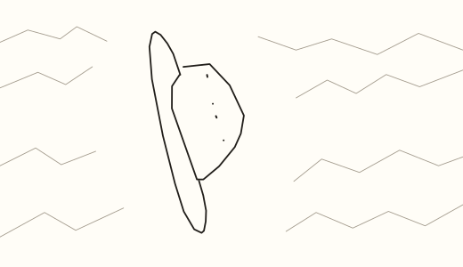
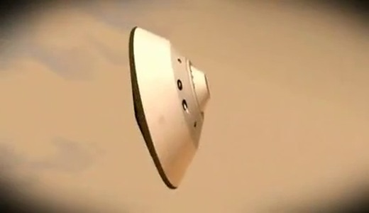
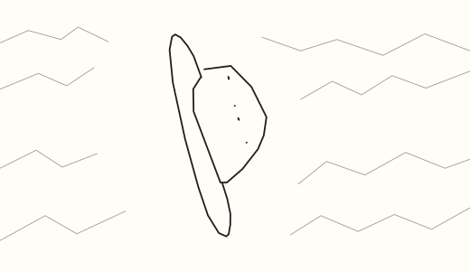
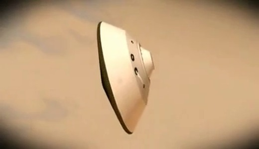
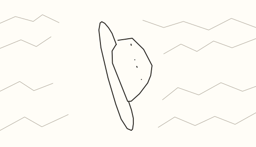
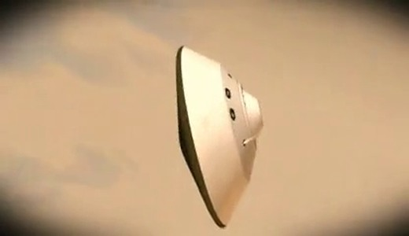
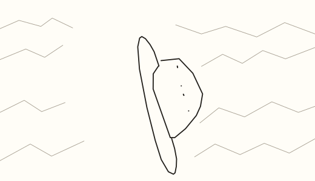
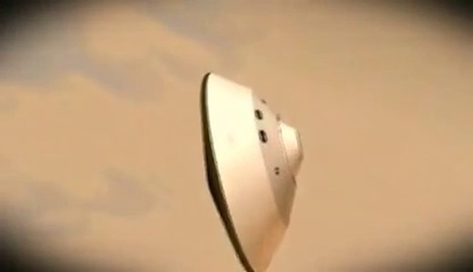
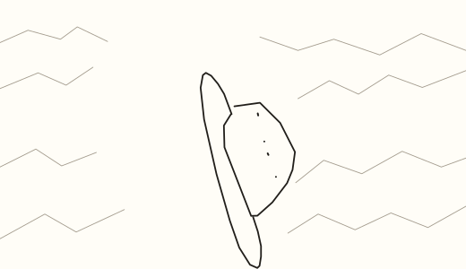
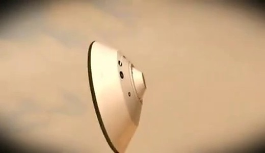
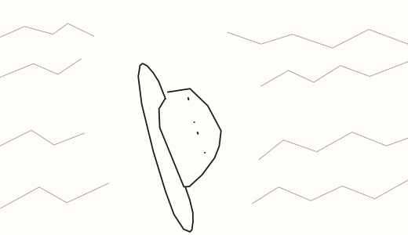
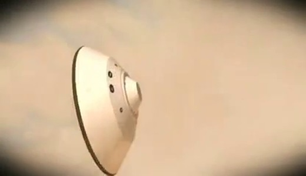
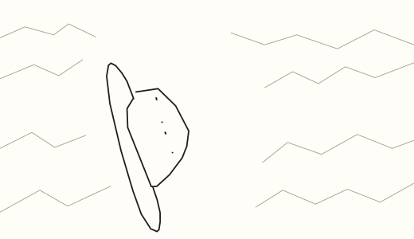
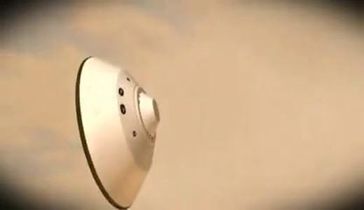
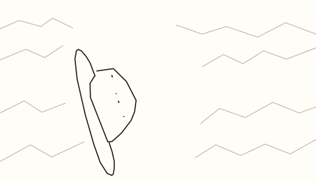
References and review
Quick, Draw! key 6582446130724864. All six original strokes are retained: the lopsided rim, angular dome and four small marks. Quick, Draw! contributors / Google Creative Lab, CC BY 4.0. Background cloud lines drawn once by agent against the CGI source. Background movement was not measured.
Archive: DPLR, NASA’s Ticket to Planetary Entry, clip-relative 2.336–4.538 s. Source kind: NASA CGI animation. Archive rights were not supplied in the candidate manifest.
SAM 2.1 landmarks drive the observed top and cap trajectories. Filled native rim/dome silhouette against source SAM: mean 0.674, minimum 0.560. The mask-fit bar is met (mean≥0.65, minimum≥0.45). This overlap is distinct from model-predicted confidence and does not establish identity or motion quality. Hidden lower contours are not verified where the source crops them.
Timeline and anchors · Checks · Filled silhouette fit · SAM provenance · Character traces · Original doodle ·

Recognition classifier and independent normal-speed playback remain unrun. No training ran. This review copy is not release approved.